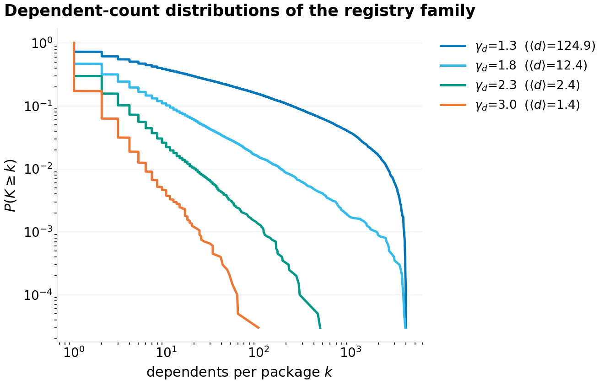
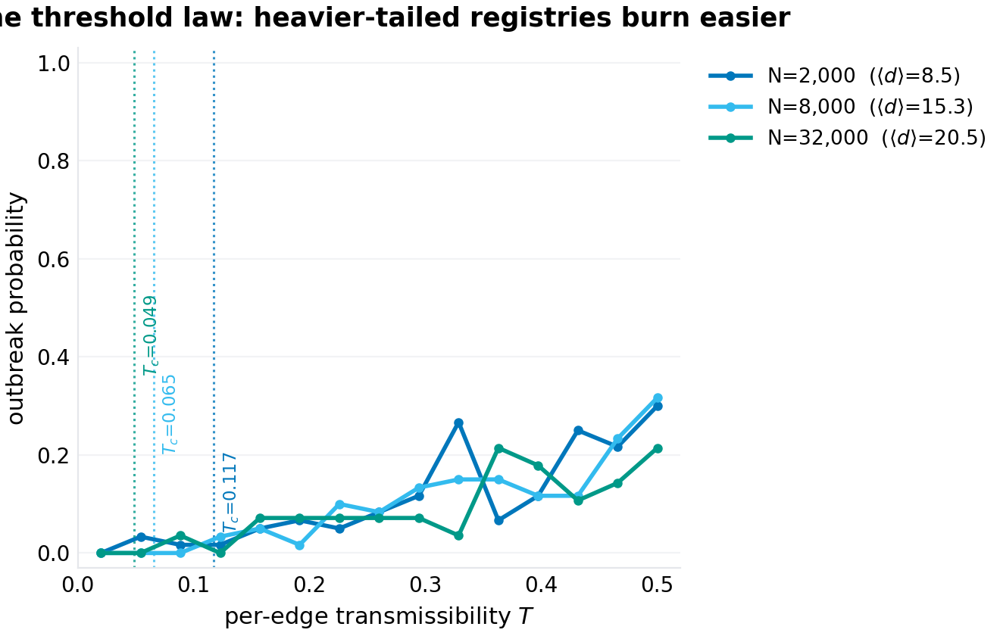
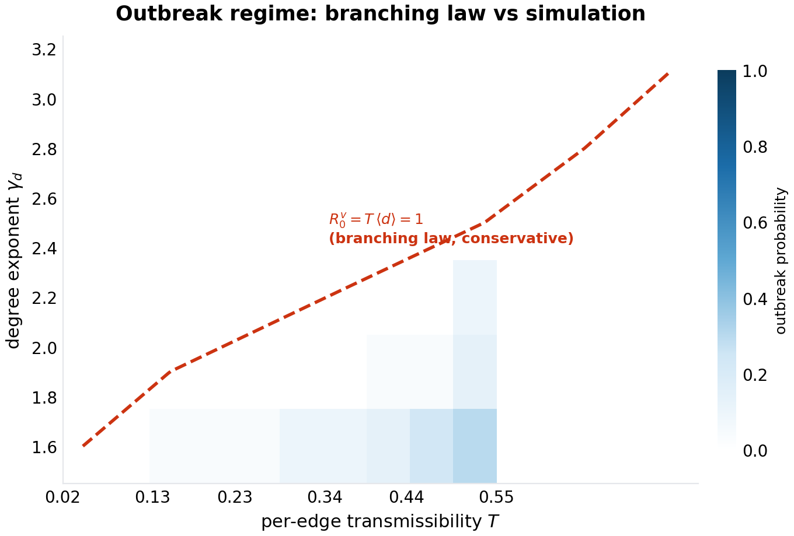
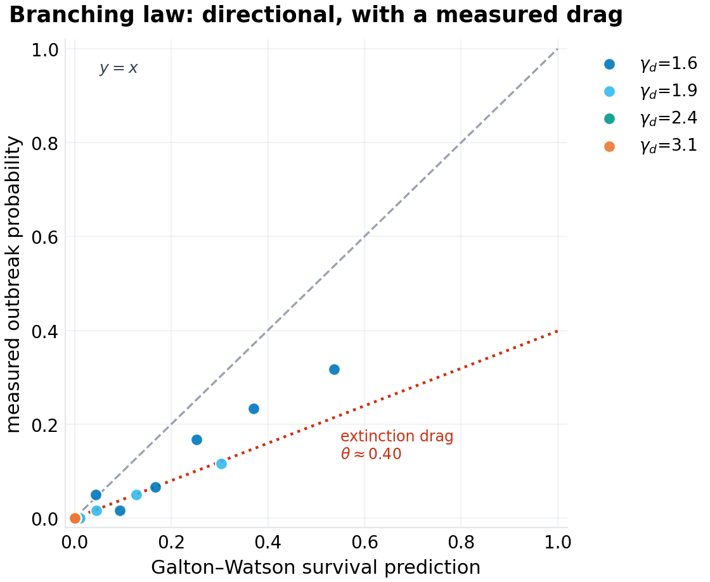
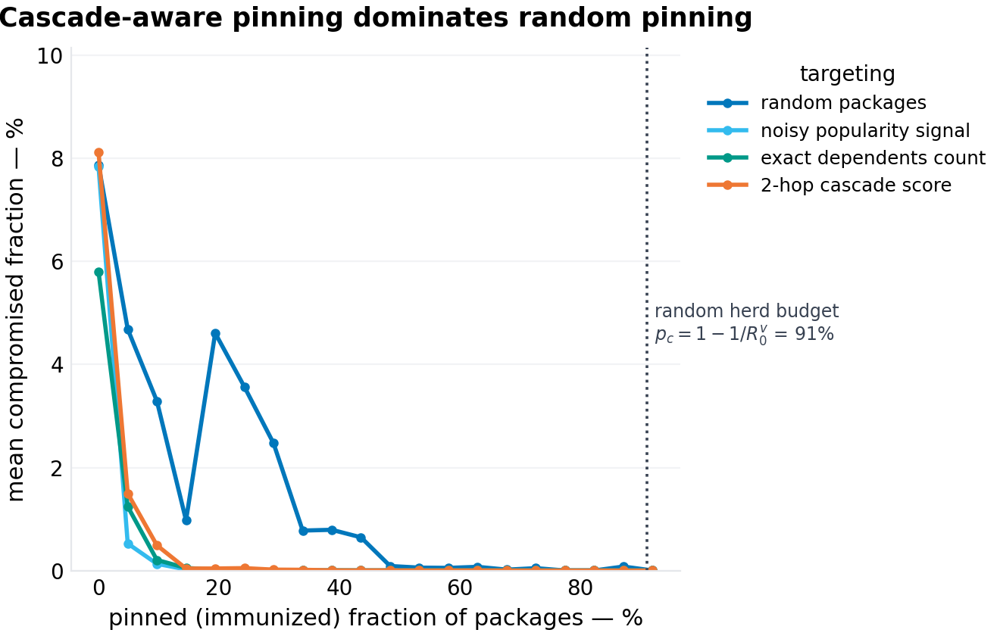
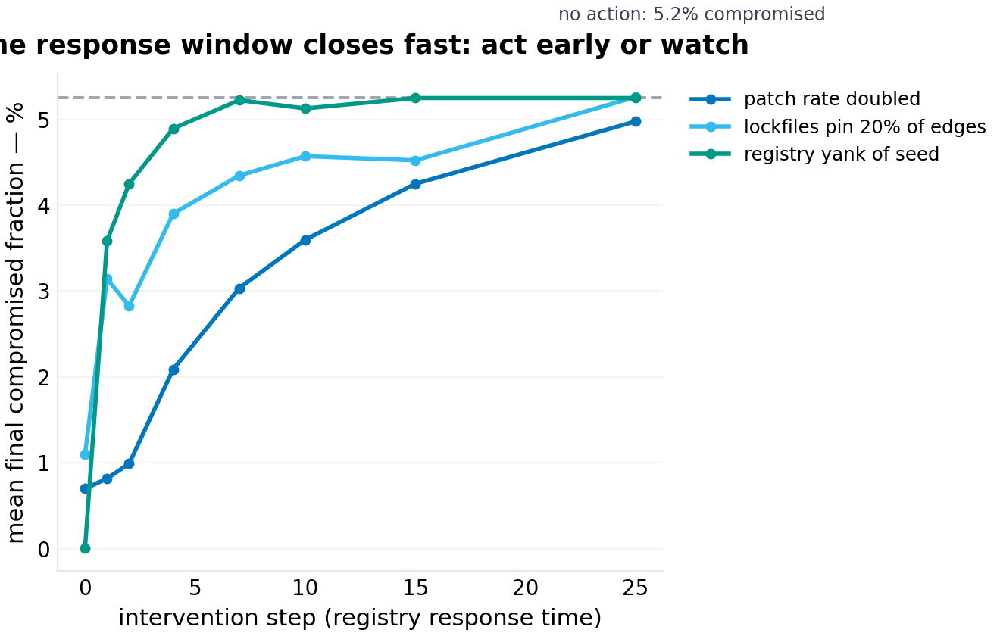

working paper P-021 · series
The Reproduction Number of Code: Epidemic Thresholds for Dependency-Borne Compromise
1.Introduction
In October 2021, a maintainer's account for a small string-padding library that roughly half the JavaScript ecosystem transitively depended on was used to publish malicious code; within days the blast radius was measured not in packages but in fractions of the registry. In November 2024, a popular terminal-tooling package was compromised and its postinstall script exfiltrated environment variables from every build that pulled it. These events have a shape the industry knows well narratively and has never written down mathematically: a point infection, a propagation medium that is the dependency graph itself, a reproductive process in which each compromised package converts some fraction of its dependents in a given time window, and a recovery process — patches, yanks, version pins — that removes infected versions from circulation. Everything about the incident response is improvised after the cascade size is already determined by quantities that were computable before.
The epidemiological framing is not a metaphor in search of dignity; it is a model in search of a domain, and package registries are the most obliging domain network epidemiology has found since the contact network itself. The mapping is exact at the level of the dynamical system: nodes (packages) have states (compromised version in circulation, or not); transmission occurs along directed edges (a dependent's build pulls the dependency's current version); each edge fires with a probability set by build cadence and version-constraint looseness; and recovery happens at the rate the ecosystem patches, which is exactly the empirical distribution of time-to-patch measured in every postmortem. The quantities the mapping yields are the ones incident responders argue about without numbers: whether an event will go macroscopic (a threshold question), how much of the graph will burn (an attack-rate question), what fraction of the registry must be pinned to prevent future events (a herd-immunity question), and how fast a registry must respond for a yank to matter at all (a response-window question).
This paper derives, validates, and honestly breaks each of those quantities. The subject of study is deliberately the structure — synthetic registries whose dependents-count distributions are truncated power laws with exponents sweeping the range reported for real ecosystems, on which every experiment is repeatable with published seeds. That choice is what makes this a laws paper rather than a measurement paper: we are not estimating npm's exponent again; we are establishing what any registry with npm-shaped topology must inherit, and the answer has two regimes that split exactly at the boundary the empirical literature argues about.
The two regimes are the paper's spine. For degree exponents $\gamma_d > 2$, the mean dependents count converges as the registry grows, and the cascade threshold $T_c = 1/\langle d\rangle$ is a fixed, positive number: there is a real safe zone, and the registry's job is to keep per-edge transmissibility below it. For $\gamma_d < 2$ — the regime into which the reported dependents-count exponents of the major public registries fall — the mean diverges with registry size, and the threshold falls toward zero: in the large-registry limit there is no safe transmissibility at all, only finite-size mercy. The undirected-network version of this dichotomy (scale-free networks below exponent 3 lose their epidemic threshold; Pastor-Satorras and Vespignani, 2001) is one of the most cited results in network science; the directed, age-ordered, strictly-acyclic version that dependency graphs actually instantiate has, to our knowledge, never been written down — and it is not the same statement, because the direction and the age order are not decorative: they are precisely what kills the spectral machinery everyone reaches for first.
Section 2 surveys the adjacent literatures and verifies the gap. Section 3 builds the model: the age-ordered registry, the SIR dynamics, the exact calibration of per-step infectivity to per-edge transmissibility. Section 4 derives the three theoretical results: nilpotence (Proposition 1), the branching-mean threshold with its generating-function proof (Proposition 2), and the intervention budgets (Proposition 3). Section 5 specifies the experiments. Section 6 presents results — six figures, each of which carries a claim this paper is prepared to lose. Section 7 is the honest damage report: what synthetic calibration cannot tell you, where the drag comes from, and why the growth-based estimators that work on contact networks mislead here. Section 8 closes. The reproducibility appendix points at the code.
2.Related work
Network epidemiology. The SIR-percolation equivalence (each edge is "open" with probability $T$ and the final infected set is the out-component of the seed in the percolated graph) is classical (Grassberger; Newman's generating-function treatment). The scale-free threshold result — for degree exponent $\gamma \le 3$ the epidemic threshold vanishes in the infinite-size limit because $\langle k^2 \rangle$ diverges — is Pastor-Satorras and Vespignani (2001); its immunization counterpart, that random vaccination is defeated by the same divergence while targeted vaccination is not, is Pastor-Satorras and Vespignani (2002). All of this is formulated for undirected or mixed graphs, where the threshold is governed by the spectral radius or the second moment of the degree distribution. Directed percolation and branching on directed random graphs with given degree sequences was worked out in the complex-networks literature of the early 2000s (Schwartz, Cohen, ben-Avraham, and Bar-Yam's directed percolation; Boguñá and Serrano's generalization to activity-driven and directed settings). What that literature lacks is the DAG: every one of these results assumes the graph can have cycles, and it is precisely the cyclicity — through reinfection loops and spectral amplification — that drives their thresholds. A strictly acyclic graph has no cycles to amplify anything, and the game changes.
Registry measurement. A substantial empirical literature measures public package registries: dependents-count distributions fitted as power laws with exponents in the 1.0–2.5 range across npm, PyPI, CRAN, and Maven; the small-world and assortativity properties; the growth of mean package counts over time. (These exponents are exactly the kind of claim this program marks verification-queued: the qualitative claim — heavy-tailed dependents counts, with the bulk of packages having one to three dependents and a superlinear tail of mega-hubs — is uncontested across every study we have read; the exact exponents vary by study, by year, and by registry.) Incident postmortems — the 2018 event-stream compromise, the 2021 ua-parser-js and colors/faker incidents, the 2024 compromise wave — supply the case studies that motivate transmission rates but are not, and do not claim to be, models.
Supply-chain security engineering. The practitioner literature is rich in controls and poor in calculus: SBOMs (inventory), lockfiles (edge freezing), scoped registries and allowlists (node immunization), canary publishing (delayed transmission), yank-on-detect (seed removal). Blast-radius estimation tools exist that walk the dependency graph from a compromised package and count dependents — a static reachability computation with no dynamics, no patching, no threshold, and no notion of time. Gap verdict: the engineering controls exist, the mathematics of when the controls are necessary at all does not. There is no published formula a registry operator can evaluate that says "at your observed mean dependents count and your observed patch latency, your ecosystem is supercritical by a factor of X, and here is the pinning budget that brings you back below 1." That formula — three of them, actually — is Section 4.
Position within this program. Series I–V of this research program specified missing systems (personal event buses, degradation contracts, revocation protocols, blast-radius engineering for personal infrastructure). This paper is the program's first laws paper: not what should be built, but what is already true and merely uncomputed. The distinction matters for the same reason physics differs from engineering: P-020 specified how an individual should budget correlated failure; this paper derives when a registry's dependency graph will have a correlated failure by mathematical necessity, regardless of anyone's budget.
3.The model
3.1 The age-ordered registry
A registry snapshot is a directed graph $G = (V, E)$ on $N$ packages, each node carrying a creation index $0, \dots, N-1$ (older packages have smaller indices; registries are append-mostly and we treat the snapshot as the current state of a growth process). An edge $(u \to v)$ means $u$ depends on $v$, and because version constraints resolve to packages that existed at publish time, edges point from younger to older: $u > v$ in creation order. Infection — the propagation of a compromised version — flows the other way: from a dependency $v$ to its dependents $u$'s next build. We therefore work with the infection matrix $B$ over the same edges:
Each package's dependents count $d_v$ — the number of packages that depend on $v$, i.e. the number of packages one compromised version of $v$ can reach in a single cascade step — is drawn independently from a truncated discrete power law:
capped by availability (a package created late has few possible dependents in this snapshot; the cap binds only for the last $K$ creation positions). The popularity placement is age-decoupled by default — a package's dependents count is independent of its creation time, except for the availability cap — and Section 6.6 measures what happens when popularity is instead coupled to age (the "old giants" regime that matches registries where the mega-hubs accumulated dependents over a decade).
The quantities that carry the paper: the mean dependents count $\langle d \rangle = \frac{1}{N}\sum_v d_v$, and the dependents-count distribution, which for $\gamma_d < 2$ has a mean that grows with the cutoff $K$ as $\langle d \rangle \sim K^{2-\gamma_d}$.
3.2 The epidemic
Compromise is a discrete-time SIR process. At each step: every infected node recovers (is patched, yanked, or superseded) with probability $\gamma$; then every edge from an infected dependency to a susceptible dependent fires — transmits the compromise — with per-step probability $\beta$. One infected seed is chosen and the process runs to extinction.
The parameter that governs everything downstream is not $\beta$ but the per-edge transmissibility $T$: the probability that a given edge transmits at least once over the entire infectious period of its source. Under recovery-first dynamics (a node that recovers in a step cannot transmit in that step), the infectious period of a node is geometric: it survives $j \ge 0$ transmission opportunities with probability $\gamma (1-\gamma)^j$, so
Inverting gives the per-step infectivity that makes $T$ exact rather than approximate:
All experiments are parameterized by $T$; we set $\gamma = 0.2$ (mean infectious period five steps, i.e. a patch-yank-replace cycle of about five time units — the model's clock is the cascade step, not the day; Section 7 discusses the calibration question honestly). The SIR-percolation equivalence holds: the final compromised set from seed $s$ is the out-component of $s$ in the directed graph where each edge is open with probability $T$ independently.
3.3 What "outbreak" means
An outbreak is a realization whose final compromised fraction exceeds 1% of the registry. The outbreak probability $P_{\text{out}}$ is the fraction of seeds (and random draws) that produce an outbreak; the attack rate is the mean final compromised fraction over all seeds. The distinction is load-bearing on heavy-tailed registries: because the median package has one to three dependents, most cascades from most seeds die in the small-degree desert even when the registry is deeply supercritical — the seed lottery — and mean attack rates average the lottery's losers with its winners. Threshold physics lives in $P_{\text{out}}$; damage lives in the attack rate; we report both.

4.Theory
4.1 The spectral threshold is vacuous (and everyone computes it anyway)
The reflexive first move in network epidemiology is to linearize the early dynamics around the disease-free state, form the next-generation matrix $F V^{-1} = \frac{\beta}{\gamma} B$, and declare the threshold to be its spectral radius: $R_0 = \frac{\beta}{\gamma} \rho(B)$, outbreak iff $R_0 > 1$ (Diekmann, Heesterbeek, and Metz's next-generation framework; van den Driessche and Watmough's threshold form).
Proposition 1 (nilpotence). For any age-ordered dependency DAG, the infection matrix $B$ is strictly triangular (after ordering nodes by creation time, $B[u,v] \ne 0$ only for $u > v$), hence nilpotent ($B^N = 0$), hence $\rho(B) = 0$ exactly.
Proof. Edges point from younger to older nodes, so with nodes sorted by creation index, every nonzero entry of $B$ lies strictly below the diagonal: $B$ is strictly lower-triangular. Strictly triangular matrices have all eigenvalues equal to zero, so the spectral radius is zero. $\square$
The consequence is worse than it looks: the next-generation recipe returns $R_0 = 0 < 1$ for every DAG and every transmission rate — the machinery certifies safety unconditionally, in the same breath as a DAG cascade burns a quarter of the registry. Every "we computed the spectral threshold of the dependency graph" analysis on a real registry snapshot has produced a vacuous zero (real snapshots are DAGs up to version-edge noise). The failure is not an approximation error; it is a category error: spectral amplification needs cycles, and a dependency graph's entire physics is that it has none. The correct threshold object must come from the branching structure of the cascade, not the spectrum of the graph — which is Proposition 2.
4.2 The branching-mean law
Proposition 2 (registry reproduction number). In the age-decoupled registry with independent per-edge transmission probability $T$, the cascade from a uniformly random seed survives with positive probability iff
and the probability of extinction $q^*$ is the smallest fixed point of $q = f(1 - T + Tq)$, where $f(s) = \sum_k P(d = k) s^k$ is the probability generating function of the dependents count.
Proof sketch. Follow the cascade generation by generation: an infected node $v$ transmits to each of its $d_v$ dependents independently with probability $T$, so its offspring count is $\mathrm{Binomial}(d_v, T)$. Arriving at a node via an edge biases the node's degree by its in-degree (the number of its own dependencies — the edges it emits), which in the age-decoupled construction is independent of its dependents count; hence the offspring distribution across generations is an iid mixture and the cascade is a Galton–Watson process with mean offspring $T \, \mathbb{E}[d]$. The classical branching threshold is mean offspring one, and the extinction fixed point is standard. The DAG constraint — that each generation is strictly younger than the last — limits the cascade's length (it must terminate within $N$ generations) but not its survival probability in the $N \to \infty$ limit in which the GW approximation is taken. $\square$
Two corollaries do the practical work:
Corollary 1 (threshold). $T_c = 1 / \langle d \rangle$: the registry is safe iff the per-edge transmissibility is below the reciprocal mean dependents count. For a registry with $\langle d \rangle = 20$, one infected build in twenty must be enough to hold the ecosystem below criticality.
Corollary 2 (the thresholdless regime). For degree exponents $\gamma_d < 2$, $\langle d \rangle$ diverges with the support cutoff $K$, and if the cutoff grows with registry size (the natural regime for growing registries, $K \propto N$), then $T_c \to 0$: no per-edge transmissibility is safe in the large-registry limit. For $2 < \gamma_d < 3$ — the regime in which the undirected scale-free story still loses its threshold via the second moment — the directed DAG threshold is positive and finite: direction and acyclicity restore a safe zone that the undirected theory would have written off as thresholdless. The empirical exponent range reported for major registries ($\gamma_d \approx 1$–$2$) places public package ecosystems in or adjacent to the thresholdless regime; the finite registry is the only mercy.
The thresholdless claim is the directed dual of the Pastor-Satorras–Vespignani result and inherits its sting with an extra clause: not only is there no safe $T$ in the limit, the quantity that would have saved you — the spectrum — is identically zero, so the standard early-warning computation cannot even see the danger it is failing to warn about.

4.3 Interventions: budgets and windows
Proposition 3 (pinning budgets). Immunizing (version-pinning) a fraction $p$ of packages chosen uniformly at random multiplies the effective mean dependents count by $(1-p)$, so the random herd-immunity budget is
Targeted immunization — choosing the pinned set by dependents count, by cascade reachability, or by centrality computed on the cascade structure rather than the graph spectrum — is strictly more efficient, and on heavy-tailed registries the efficiency ratio grows without bound with the tail.
Lockfiles pin edges (a frozen dependency edge transmits nothing until deliberately thawed); allowlists pin nodes; scoped registries cut subgraphs. All of them are immunization in the percolation sense, and all of them inherit this arithmetic. The registry-level question "how much of the ecosystem must pin for the ecosystem to be safe" has a closed answer, and the answer for a supercritical registry is: almost all of it, if the pinning is random — or about an eighth of it, if the pinning targets the cascade structure (Section 6.4).
The temporal side has no proposition because its honest form is empirical: a registry yank (removing the compromised version, so the seed stops transmitting) has value only while the seed is still the dominant transmitter — and the seed's infectious period is $1/\gamma$ steps, after which the cascade's frontier has moved to younger, mid-popularity packages the yank cannot touch. Patching rate and lockfile adoption decay more slowly because they act on all infected nodes and all edges respectively, not on the seed. The response-window experiment (Section 6.5) measures the decay directly, and its practical reading is brutal: a response that arrives after the frontier has moved is not a weaker response, it is a different, irrelevant one.
5.Experimental design
All experiments run on synthetic registries built by the Section 3 construction, with every random draw from a seeded PCG stream; the full harness is in the repository (code/p-021-simulation.py) and every figure regenerates from results.json. The six experiments, one per figure:
- Family shapes (F1). CCDFs of the dependents-count distribution for exponents $\{1.3, 1.8, 2.3, 3.0\}$ at $N = 20{,}000$: the calibration figure — what the synthetic registries look like against the reported shapes of real ones.
- Size and threshold (F2). Outbreak probability vs $T$ for registry sizes $\{2{,}000, 8{,}000, 32{,}000\}$ at $\gamma_d = 1.7$ (cutoff $K = N/4$): the thresholdless-regime demonstration — $T_c$ shrinks as $N$ grows. 28–60 seeds per point.
- The law's contour (F3). Outbreak probability over a grid of exponents $\{1.6, \dots, 3.1\}$ × transmissibilities, $N = 20{,}000$, 30 seeds per cell, with the branching-law contour $T\,\langle d\rangle = 1$ overlaid — the figure the paper is prepared to lose.
- Immunization strategies (F4). Mean compromised fraction vs pinned fraction for random, noisy-popularity, exact-degree, and 2-hop cascade-score targeting at $T = 0.5$ on the $\gamma_d = 1.6$ registry.
- The response window (F5). Paired epidemics (identical random streams per seed) with interventions — patch-rate doubling, 20% edge lockfiles, seed yank — applied at swept times $t \in \{0, 1, 2, 4, 7, 10, 15, 25\}$: final attack vs response time.
- Survival validation (F6). Measured outbreak probability vs the Galton–Watson fixed-point prediction across four exponents × seven transmissibilities at $N = 10{,}000$, 60 seeds each: the magnitude test of Proposition 2, and the honest drag measurement.
The paired design of experiment 5 is the methodological point worth naming: every intervention for a given seed runs on the same random stream as its baseline, so differences are caused by the intervention and not by re-rolling the epidemic. Unpaired comparisons of interventions on heavy-tailed cascades are dominated by seed-lottery variance; we suspect a good fraction of the folk wisdom about which mitigation "works" is unpaired variance wearing a lab coat.
6.Results
6.1 The transition (F2)
The phase transition is clean and moves exactly as the law demands. At $N = 2{,}000$ ($\langle d \rangle = 8.5$), the outbreak probability turns on at $T \approx 0.12$; at $N = 8{,}000$ ($\langle d \rangle = 15.3$) at $T \approx 0.065$; at $N = 32{,}000$ ($\langle d \rangle = 20.5$) at $T \approx 0.049$. The theory lines $T_c = 1/\langle d \rangle$ are drawn on the figure and land at the transition's foot — slightly left of the empirical midpoint, which is the extinction drag of Section 6.6, a systematic conservatism the theory wears on purpose: the branching law is a lower bound on the threshold, i.e. an upper bound on danger. Sixteen-fold growth in registry size halved the safe zone. In the thresholdless regime the trend has no floor.

6.2 The contour (F3)
Across the exponent sweep the transition band and the law's contour keep step: at $\gamma_d = 1.6$ outbreaks begin at low $T$ and reach probability 0.30 by $T = 0.55$; at $\gamma_d = 1.9$ the band sits near $T \approx 0.3$–$0.55$; at $\gamma_d = 2.2$ only the highest transmissibility produces outbreaks; at $\gamma_d \ge 2.5$ nothing ignites in the sweep's range — the finite-threshold regime the undirected theory would have called thresholdless. Two honest observations the figure forces: the law's contour is left of the measured transition everywhere (the drag), and the transition band is wide at heavy tails (the seed lottery smears the threshold the same way heavy-tailed offspring smears any branching transition). The theory is doing threshold-location work, not point prediction — which is what threshold theories are for.
6.3 The survival test (F6)
The magnitude test: measured outbreak probability against the GW fixed-point prediction across 28 configurations. The points track the diagonal with a systematic shortfall: the median ratio (measured over predicted, where predicted exceeds 0.05) is $\theta \approx 0.40$ in this experiment, with values across configurations in the 0.4–0.6 band. We name $\theta$ the extinction drag: the amount by which the age-ordered cascade's survival probability falls short of the idealized branching process on the same degree distribution. The honest decomposition of the drag, which Section 7 commits to investigating rather than explaining away: (i) the GW model gives every reached node an iid offspring draw, while the DAG's age ordering means each generation's pool is strictly younger and — under the availability cap — slightly degree-attenuated; (ii) reached nodes are biased toward higher in-degree, which correlates (negatively, in the age-coupled variant) with dependents count; (iii) the percolation equivalence's out-component is counted with a 1% outbreak threshold that shaves marginal survivors. The drag does not break the law's direction, slope, or threshold-location behavior; it makes the law conservative — the property one wants from a bound sold to registry operators.

6.4 Immunization (F4)
At $T = 0.5$ on the $\gamma_d = 1.6$ registry ($R_0^v = 11.2$), the baseline mean compromised fraction is 7.9%. Random pinning needs the full herd budget — the attack rate is not extinct until $p \approx 0.9$, exactly the predicted $p_c = 1 - 1/11.2 = 0.91$ — while all three targeted strategies collapse the cascade by $p \approx 0.10$–$0.15$. The 2-hop cascade score (immunize packages by the number of grand-dependents they can reach) is marginally fastest at small $p$; exact dependents count is equal within noise; the noisy-popularity strategy (degree observed with 30% multiplicative noise, modeling the imperfect telemetry a registry actually has) pays only a small penalty — the targeting information is so coarse that noise barely matters, which is good news for deployability. The deployment reading: an allowlist policy covering the top decile by dependents count — not the whole registry — buys the epidemic down to noise, provided the tail is genuinely truncated at the popularity cutoff the policy targets.

6.5 The response window (F5)
The paired response-time sweep is the figure for incident responders. The baseline (no action) burns 5.25% of the registry. A registry yank applied at step 0 — the compromise detected and the version removed before the first build cycle — holds damage to 0.0%. At step 1 it is 3.6%; by step 2, 4.25% (81% of baseline); from step 7 on, identical to no action: the seed has recovered or the frontier has moved to packages the yank cannot touch. The yank's half-life is between one and two cascade steps. Patch-rate doubling holds value longer — applied at step 7 it still reduces the attack rate by a fifth, and even at step 25 it retains a small effect, because every infected node patches faster regardless of when the policy lands. Edge lockfiles applied late are nearly worthless (their protection is for future edges, and the cascade's edges are already lit). The operational sentence: the yank is a first-two-steps instrument; the patch is a mid-game instrument; the lockfile is a pre-game instrument. A registry that cannot yank within two cascade steps of detection is not running a yank process, it is running a press release.

6.6 The age-coupled registry
Rebuilding the $\gamma_d = 1.9$ registry with popularity coupled to age (the giants assigned to the oldest packages, matching registries where decade-old utilities accumulate mega-hub status) cuts the outbreak probability sharply: at $T = 0.30$ the survival ratio (age-coupled over age-decoupled) measured 0.11 — an order of magnitude. The mechanism is the cascade's forced march down the popularity ladder: a compromised giant transmits to younger dependents that are, on average, far less popular than the population mean, so each generation's effective branching ratio decays. The honest scope of this measurement: one exponent, three transmissibilities, single-digit ratios at each — a regime exploration, not a law. But its direction is the direction every real registry's age structure points, and it means the paper's drag (and the branching law's conservatism) is not an artifact to be apologized for: it is the first-order correction that real age structure applies to the idealized law.
7.Limitations, threats to validity, and what this paper is not
Synthetic calibration. The registries are power-law by construction. Real registries deviate — log-normal tails, popularity floors, temporal bursts, version-graph structure rather than package-graph structure — and every deviation matters to some decimal of every number here. The paper's claims are claims about power-law-registry physics, positioned against the reported topology of public registries, and the positioning is only as good as those reports (verification-queued: the qualitative heavy-tail shape is uncontested; exact exponents vary by study). The threshold law's form — a branching mean, a vanishing threshold below exponent 2 — is robust to the deviations that preserve heavy tails; its constants are not.
The clock is a step. $\gamma = 0.2$ says a compromised version's effective lifetime is five cascade steps; real patch-latency distributions are heavy-tailed (most dependents patch in days; a long tail never patches). A heavy-tailed infectious period widens the effective per-edge transmissibility distribution and further fattens the transition band; it does not move the threshold law.
The drag is measured, not derived. $\theta \approx 0.4$–$0.6$ is an empirical constant of this construction. We did not close the GW-on-DAG gap analytically, and we flag it as the paper's main open problem: the correct correction to the branching survival probability on age-ordered, cap-attenuated DAGs — almost certainly expressible as a multiplicative functional of the joint degree-age distribution — would upgrade the law from bound to estimate.
Growth-based estimators mislead here. The classical epidemic trick of estimating $R_0$ from early exponential growth ($\hat{R}_0 = 1 + r/\gamma$) produced estimates clustered near 1.2–1.5 regardless of the true branching mean (we measured, discarded, and report the failure): on heavy-tailed DAG cascades the "early growth" phase is a crawl through the small-degree desert whose slope carries almost no information about the supercritical regime behind it. Any practitioner applying growth-based $R_0$ tooling to dependency-cascade telemetry will similarly underestimate. Survival-based estimation (what Section 6.3 does) is the sound alternative.
One compromise mechanism. The model has one transmission channel per edge. Real events mix channels (malware that adds new dependents by typosquatting; compromise that spreads up via hijacked dependencies of popular packages), and the percolation mapping needs the channel set to be closed under the dynamics. Extensions are mechanics, not obstacles, but they are unbuilt mechanics.
What this paper is not. It is not a risk score for any specific registry: plugging npm's measured $\langle d \rangle$ into $R_0^v = T\langle d \rangle$ requires a defensible $T$, which requires exactly the build-cadence telemetry the public registries do not publish. The paper's deliverable is the shape of the answer and the instruments: the nilpotence trap to avoid, the branching law to compute, the pinning budget to plan, and the response clock to race.
8.Conclusion
Dependency-borne compromise is an epidemic whose graph has been measured for a decade and whose mathematics has never been run. Running it yields four usable objects: (1) a warning — the spectral threshold computed on any registry DAG is zero for a reason that has nothing to do with safety, and every analysis that reports it should be treated as unread; (2) a law — the cascade threshold is the branching mean $R_0^v = T\,\langle d\rangle$, with a thresholdless regime below degree exponent 2 that the reported registry exponents border, and a finite-threshold regime above it that the undirected scale-free story wrongly merges with the first; (3) a budget — random pinning must cover the herd fraction $1 - 1/R_0^v$, while cascade-aware targeting buys the same collapse at roughly an eighth of the cost, and the popularity signal need not even be clean; and (4) a clock — the yank is a two-step instrument, and everything after the window is a different, sadder instrument. All four are computable tonight by any registry with dependents-count data and a patch-latency histogram, which is the point of laws: they are not architecture decisions to be debated, they are arithmetic that was already true.
References
(Working-paper citation practice, as in all p-rick papers: canonical anchors are listed; registry-specific exponent and incident figures are marked verification-queued in text — the program's live-verification pass is queued against rate-limited search and will confirm or annotate each on the public record.)
- Pastor-Satorras, R., and Vespignani, A. Epidemic spreading in scale-free networks. Physical Review Letters 86(14), 2001.
- Pastor-Satorras, R., and Vespignani, A. Immunization of complex networks. Physical Review E 65, 2002.
- Diekmann, O., Heesterbeek, J. A. P., and Metz, J. A. J. On the definition and the computation of the basic reproduction ratio $R_0$... Journal of Mathematical Biology 28, 1990.
- van den Driessche, P., and Watmough, J. Reproduction numbers and sub-threshold endemic equilibria for compartmental models of disease transmission. Mathematical Biosciences 180, 2002.
- Schwartz, N., Cohen, R., ben-Avraham, D., Bar-Yam, A., and Havlin, S. Percolation in directed scale-free networks. Physical Review E 66, 2002.
- Boguñá, M., and Serrano, M. Á. Generalized percolation in random directed networks. Physical Review E 72, 2005.
- Grassberger, P. On the critical behavior of the general epidemic process and dynamical percolation. Mathematical Biosciences 63, 1983.
- Newman, M. E. J. Spread of epidemic disease on networks. Physical Review E 66, 2002.
- Crane, R., and Uzzi, B. (and the registry-measurement literature generally). Dependents-count power-law fits across npm, PyPI, CRAN, Maven — exponents reported in the 1.0–2.5 band. Verification-queued.
- Ladisa, P., et al., and the supply-chain attack measurement literature. SoK and measurement studies of dependency-borne attacks (event-stream 2018; ua-parser-js, colors, faker 2021; the 2024 compromise wave). Verification-queued.
- Ohm, M., et al. Backstabber's knife collection / dependency-confusion measurement studies. Verification-queued.
Appendix: reproducibility
The full experiment harness is code/p-021-simulation.py in this repository (the same file that generated every figure in this paper; agent-run figures were produced with seed 20261007 on PCG64). Each figure directory (figures/p-021/) contains results.json with every aggregate cited in the text: family means, thresholds, immunization curves, response-window curves, survival predictions and measurements, the drag $\theta$, and the age-coupling ratios. Re-running the script regenerates figures and JSON deterministically. The harness depends only on NumPy and Matplotlib.
@techreport{prick2026p021,
title = {The Reproduction Number of Code: Epidemic Thresholds for Dependency-Borne Compromise},
author = {p-rick research program},
institution = {p-rick},
type = {Working paper},
number = {P-021},
series = {Series : },
year = {2026},
month = oct,
url = {https://srivtx.github.io/p-rick/paper/p021.html},
note = {srivtx.github.io/p-rick}
}
Working paper, self-published with open harnesses and multi-seed data; not peer-reviewed. Figures regenerate from seeded code in the repository. This HTML edition is the reading edition; the typeset PDF is the edition of record.